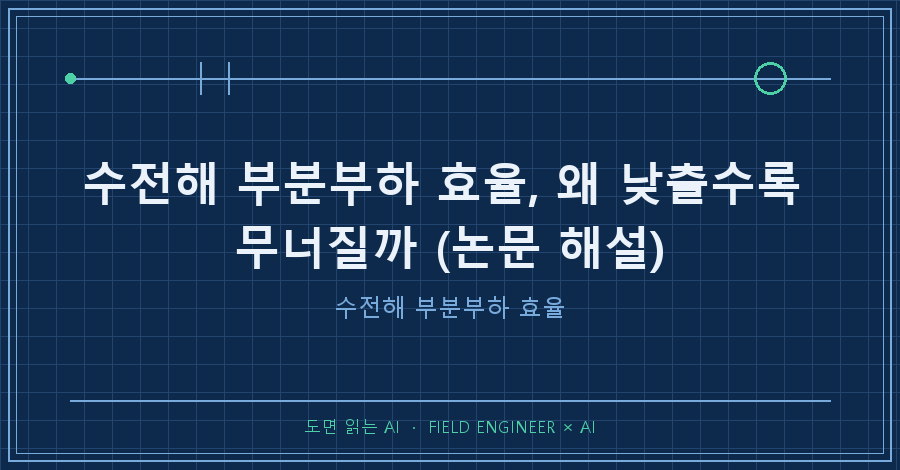

수전해 부분부하 효율이 무너지는 이유를 한 줄로 줄이면 이렇습니다. 새는 전류는 운전점을 낮춰도 별로 안 줄어드는데, 수소를 만드는 전류는 크게 줄어요.
오늘 논문의 시뮬레이션에서 수소로 간 전류 비율(쿨롱효율)은 높은 운전점에서 93~94%, 가장 낮은 운전점에서 약 32%였습니다 [Golmarz et al. 2025, Fig.9].
AI로 논문을 읽는 연재 6편째예요. 지난 편이 '셀을 쌓으면 배관으로 전기가 샌다'였다면, 이번엔 그게 왜 낮은 출력에서 유독 아픈지입니다. 이란 타브리즈대 연구팀이 2025년 9월 Energy Engineering에 낸 오픈액세스 논문이에요.
1. 이 논문은 무엇을 풀려고 했나요
알칼라인 수전해 스택에서 기생전류가 셀마다 얼마나 드나들고, 효율을 얼마나 깎는지 계산하는 게 목표였어요 [Golmarz et al. 2025, 1장].
기생전류(shunt current)란 셀을 통과하지 않고 공통 전해액 배관으로 돌아가는 전류입니다. 재생에너지에 물린 설비는 출력을 수시로 내려야 하니, 낮은 출력에서 이 누수가 얼마나 커지는지가 곧 운전 효율이에요.
2. 어떻게 계산했나요
실험이 아니라 컴퓨터 시뮬레이션입니다 [Golmarz et al. 2025, 2장].
| 항목 | 설정 |
|---|---|
| 스택 | 20셀, 바이폴라판 + 강철 끝판 |
| 전해액 | 수산화칼륨(KOH) 6 M |
| 온도 | 85 ℃ 고정 |
| 운전점 | 평균 셀 전압 1.3 → 1.8 V |
| 뺀 것 | 기체상 물질전달 제한 |
장치가 하나 더 있어요. 기포 때문에 액체가 차지하는 비율을 스택 아래 100%에서 위 출구 50%로 줄게 넣고, 전도도는 그 비율의 1.5제곱에 비례시켰습니다 [Golmarz et al. 2025, 식(3)].
50%를 넣으면 0.5^1.5 ≈ 0.35. 위쪽 배관은 전기가 약 3분의 1만 통하는 길이 됩니다.
3. 부분부하에서 효율이 무너지는 구조는 무엇인가요
① 아래 입구 쪽이 더 샌다. 위 출구는 기포가 많아 전도도가 낮기 때문이에요 [Golmarz et al. 2025, 3장].
② 스택 양 끝이 제일 많이 샌다. 가운데(10번 셀 근처)에서 0을 지나고, 1번 쪽은 음(−), 20번 쪽은 양(+) 방향으로 커집니다 [Golmarz et al. 2025, Fig.6·7].
③ 전압을 올리면 누수도 늘지만, 조금만 는다. 셀당 최댓값이 1.4 V에서 16 A, 1.8 V에서 약 20 A예요 [Golmarz et al. 2025, Fig.6·7]. 같은 구간에서 쿨롱효율은 32%대에서 94% 가까이로 뜁니다.
쿨롱효율은 넣은 전하 중 수소 생성에 쓰인 몫이에요. 논문은 전 셀의 수소 생성 전류 합을 '스택 전류 × 셀 수'로 나눠 구했습니다 [Golmarz et al. 2025, 3장].
두 수치를 나란히 놓으면 함정이 보여요. 운전점을 내려도 누수는 크게 줄지 않는데 수소를 만드는 전류는 확 줄어드니, 새는 몫의 비율이 커집니다. 논문은 부하가 없어도 전극 반응식이 0이 아닌 전류를 예측해 기생전류가 생긴다고 설명하고, 낮은 전류의 효율 저하를 여러 분극 효과의 상호작용으로 봅니다 [Golmarz et al. 2025, 2~3장].
그럼 무조건 높이 돌리면 될까요? 초록은 아니라고 해요. 에너지효율은 쿨롱효율을 따라 오르다 약 1400 mA에서 정점을 찍고, 이후 스택 전압이 올라 다시 떨어진다고 적었습니다 [Golmarz et al. 2025, 초록].
4. 이 논문의 한계는 무엇인가요
전부 계산값이고, 실측 검증은 본문에 없어요. 온도 고정, 20셀 한 구성입니다.
또 '부하 30%' 같은 비율이 아니라 셀 전압으로 운전점을 바꿔서, "30% 부하에서 몇 %"로 옮기면 논문에 없는 말이 됩니다.
5. AI에게 이 논문을 어떻게 읽혔나요
여기부터는 읽는 방법이에요. PDF 텍스트를 AI에게 읽히고, 그림이 있는 쪽은 이미지로 따로 띄워 대조했습니다. 이 논문은 원문에 걸림돌이 네 개 있어 연습 교재로 좋았어요.
축 라벨. 본문은 "1.3 A에서 32%"라고 쓰고, 요약도 그대로 옮깁니다. 그런데 그림을 띄우면 가로축 눈금이 1.3~1.8로 전압 범위와 똑같아요. 단위를 확정할 수 없어 이 글은 '낮은/높은 운전점'으로만 썼습니다.
정의 방향. 에너지효율 정의가 초록과 결론에서 분자·분모가 뒤집혀 있어요.
주장-그림 매핑. 초록의 '1400 mA 정점'을 보여주는 그림은 본문에 없습니다. 그래서 출처를 [초록]으로만 달았어요.
문장 vs 그래프. 본문은 "스택 끝으로 갈수록 커진다"지만 그래프는 양 끝이 다 큽니다.
네 개를 잡은 질문은 이것이었어요.
1) Fig.8·9의 축 제목과 눈금 최솟값/최댓값을 그대로 적고,
본문의 전압·전류 범위와 숫자가 겹치면 표시해.
2) 'efficiency' 정의를 초록/본문/결론에서 찾아 분자·분모를 따로 적어.
3) 초록 주장마다 근거 그림·표 번호를 붙여. 없으면 '근거 그림 없음'.
4) 본문 문장과 그래프 모양이 다르게 읽히는 곳을 뽑아.요약은 문장을 옮길 뿐이라 원문의 흠까지 같이 옮깁니다. 그림을 따로 띄워 문장과 맞춰보는 한 단계가 핵심이에요.
6. 자주 나올 질문 세 가지
Q. 부분부하 효율 저하의 주범은 기생전류뿐인가요?
논문은 여러 분극 효과의 상호작용이라고 씁니다. 다만 낮은 운전점에서도 누수가 크게 줄지 않는다는 결과가 핵심이에요 [Golmarz et al. 2025, 3장].
Q. 그럼 항상 최대 출력이 답인가요?
아니요. 에너지효율은 약 1400 mA에서 정점이고 이후 전압 상승으로 떨어집니다 [Golmarz et al. 2025, 초록].
Q. 32%는 실제 설비 값인가요?
아니요. 20셀·85 ℃ 시뮬레이션의 가장 낮은 운전점 값입니다.
---
정리하면 부분부하의 효율 붕괴는 줄지 않는 누수를 작아진 생산량으로 나누는 문제예요. 논문은 전해액 분포 관리와 바이폴라판 설계·절연으로 양 끝 누수를 줄이는 방향을 제시합니다 [Golmarz et al. 2025, 3장].
다음 편에서는 셀을 직렬로 더 쌓을수록 이 손해가 왜 커지는지 봅니다. 여러분 분야 논문에도 초록과 그림이 서로 다른 말을 하는 곳이 있던가요?
AI로 논문 읽는 방법은 makefield.ai에 계속 쌓아두고 있습니다.